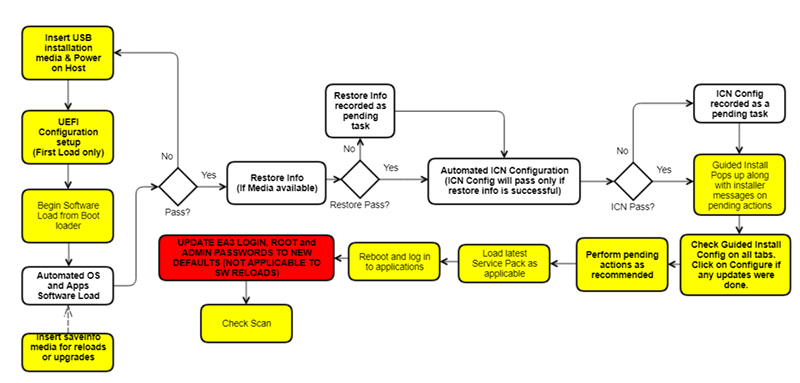
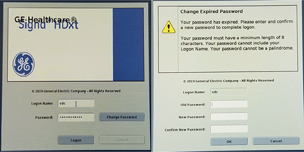

- 00000018WIA30D43640GYZ
- id_20143337.13
- Jul 28, 2025 5:44:41 PM
VX28.0 (USB load only)
Install the host system software for VX28.0 and later (USB load only).
This flowchart shows the high-level summary of the USB host system software load workflow. Boxes shown in white are automated. All other actions must be completed manually. Note the important step of updating EA3 login, root, and admin passwords to new defaults (not applicable to SW reloads) in the red box. This has been mandated from the VX28.0 software release.

| Notice | |
|---|---|
| Loading software | |
|---|---|
| Step | Procedure for USB load only |
| Prerequisites | (For new installation only)
|
(For reinstallation only)
| |
|
Note Refer to the MR Service Pack Software Matrix (DOC1667089), available from the online documentation library and make sure the necessary service pack media (if any) is available. Do not start the software load until this media is available.
| |
| Required media |
|
| (For reinstallation) Perform SaveInfo (Check Information instead if using an older SaveInfo media) | Saving information. |
| Load USB host system software | (For new installation only)
Loading USB host system software. Note The Host OS Load, Applications Software Load, and ICN OS copy actions should complete automatically. The Configure ICN action may fail, which would be reported as a failure in the final report. If any failures occur prior to the Applications Software Load completion, restart the Software Load process. For a list of errors and possible actions during the software load procedure, see Troubleshooting the software load. |
| (For reinstallation only)
Reloading or upgrading USB host system software. Note If a RestoreInfo media with all the required files is available, then Host OS load, Applications Software Load, ICN Configuration, IRM software and SSA licenses, including restore of connectivity settings, are all automatically executed sequentially. In case any failures are observed, after the completion of applications software load, a dialog box appears showing all remaining tasks that need to be completed. To complete these tasks manually, see the procedures in this table. If any failures occur prior to the applications software load completion, restart the software load process. For a list of errors and possible actions during the software load process, see Troubleshooting the software load. | |
| System configuration | (For new installation only) Complete network configuration, Guided Install Options, and Security levels for software versions prior to 29.0. Complete any other site configuration as needed in Guided Install. |
| Configure ICN (VRE) OS | Configuring the SIP, ICN, or VRE. Note This task is automated for software reinstallations and upgrades if the RestoreInfo action is successful. |
| Install IRM | Installing IRM software. Note This task is automated for software reinstallations and upgrades if the RestoreInfo action is successful. |
| Install SSA | The SSA license is restored during the RestoreInfo process. This step is not necessary for reinstallation unless the service license ID has been modified. If the service license ID has been modified, or if this is a new install, record the service license ID and contact OLE to generate a new license for the site. If you are upgrading to any of the following software revisions or later, VX29.1 (or PX26.4 for China) or 30, or changing the host PC or any of its components, the SSA 16-digit license code will change. Additionally, the SSA API requires an additional signature file. This requires the SSA soft key license for the site to be regenerated and both files (.dat & .ssa) must be reloaded to the host computer. See Service Licensing for information on how to record the service license ID, order the license and load the license. |
| Install options/option keys | For the purchasable option keys, see Option key catalog matrix.. Note Signa Secure Advanced option: If the customer purchased this license, configure the security setting in Guided Install to Signa Secure Advanced. The system must be restarted to enable the highest security configuration in Guided Install. |
| Install operator manual | Installing operator documentation (online help). |
| Install latest service pack (if required) | Installing Software Patches (General Guide). Note Refer to the MR Service Pack Software Matrix (DOC1667089), available from the online documentation library and make sure the necessary service pack media (if any) is available. Do not start the software load until this media is available. |
| Close Guided Install | Closing Guided Install allows for the remainder of the USB installer actions including scantools (default) option keys install and upgrade mode checks for ICW. This step is critical for successful completion of software load, thus do not reboot the system without closing Guided Install. |
| Reboot | Reboot and and click Start to log in to applications. Note The first boot after a software upgrade will take a long time due to extended TPS Reset. |
| Setup EA3 login password | Note This step is applicable to new installations only. Software upgrades from earlier revisions or re-LFCs with good SaveInfo media will transfer older passwords and will not need to change the passwords on initial login. Attention You must accurately follow the Changing passwords procedure. See Changing passwords. If you do not follow the procedure, it may lead to a situation where the system is locked up and not accessible for service and/or clinical use. The only option for recovering from forgotten passwords is to reload the software without using the RestoreInfo and completing all system calibrations. Software versions VX28 and later enforce a mandatory change of the login password on first boot. Use the initial default password for sdc user adw2.0adw2.0 to log in. At the prompt to change passwords, provide new default password adw2.02.0Note adw2.02.0 will now be set as the new default password for
VX28 and later
-based software revisions. Inform the customer about the new default login password.  |
| Installation and calibration | (For new installation only) Continue with the next steps in the Installation and Calibration Wizard. Refer to Installation and calibration wizard (ICW) Installation mode for your product. |
| (For reinstallation only) Launch Installation and Calibration Wizard and complete any necessary calibration procedures. Refer to Installation and calibration wizard (ICW) Upgrade mode for your product. | |
| Configure About MR Scanner | If not completed during previous steps, run the About MR Scanner tool. See Running the About MR Scanner tool. |
|
Do a check of the cyber security compliance | |
| Do a check scan | Doing a check scan. |